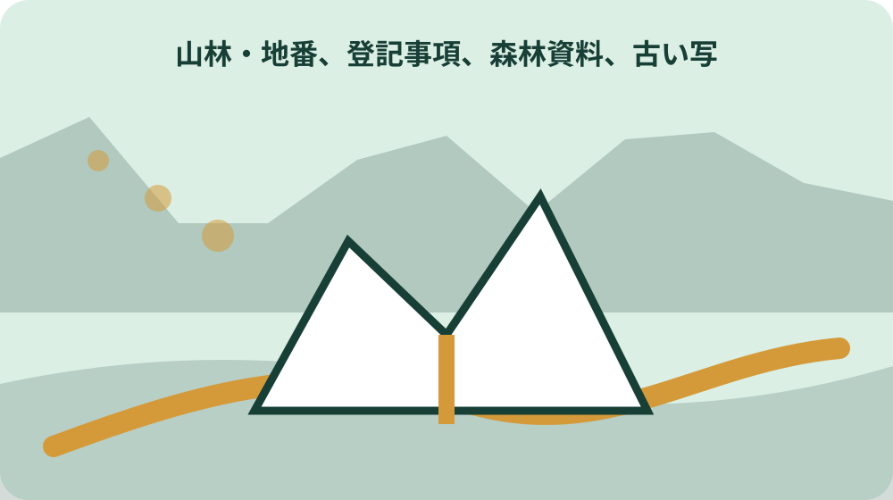
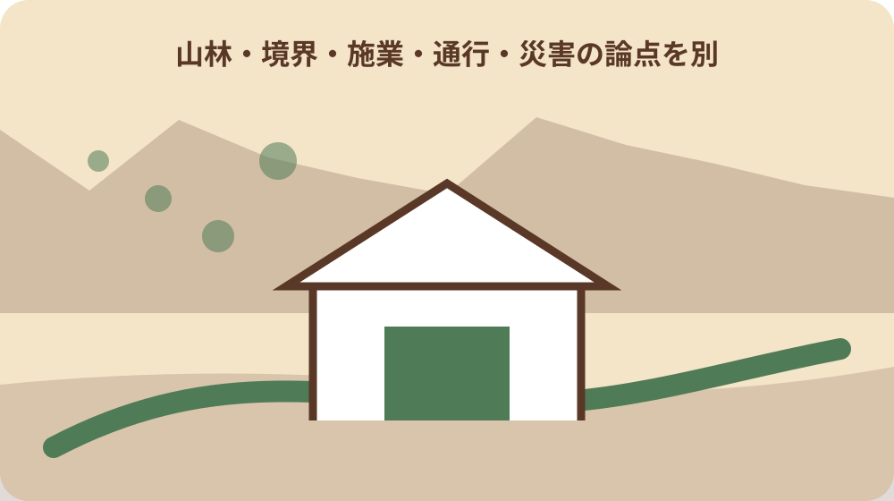

先に結論を確認する
この記事の答え：届出対象の全地番について、届出書の行番号と対応する図上番号を置き、おおまかな位置が分かる印を付けます。使用地図の名称、取得先、取得日、縮尺、方位も残し、この図だけで筆界を確定するものではないと明記します。
森町で最初に照合する条件：取得した全地番を届出書の行番号と位置図の図上番号で一対一に結び、地番漏れを全筆チェックする。
全対象筆を示す位置図セットを成果物にする
森町へ森林土地所有者届を出すとき、本稿の成果物は制度説明ではなく、届出対象の全地番を図上で確認できる位置図セットです。届出書、地番対照表、位置図、取得原因資料を同じ案件番号で束ね、どの地番がどの印かを一対一にします。
森町は提出書類として届出書、土地の位置を示す地図の写し、登記事項証明書や契約書等の取得原因資料を挙げています。位置図だけを先に作らず、三つの資料に現れる地番、面積、取得者、取得原因が対応するかを読み合わせます。
林野庁の事務処理マニュアルは、届出対象とする森林の土地すべてについて位置を示す必要があると説明しています。一筆だけ代表表示して残りを『ほか』と省略せず、全筆チェック欄へ図上番号、表示済み、確認資料を記します。
提出形式は紙、郵送その他の取扱いで必要部数や用紙寸法が変わり得るため、森町林政係へ確認します。大判地図を縮小する場合、地番や番号が読めるかを実寸で印刷して確かめます。電子ファイルだけで準備を終えず、提出用の印刷状態と控え用の保存状態を別々に検査します。
届出書の地番行と図上番号を一対一にする
届出書の土地欄へ上から行番号を付け、位置図にはF-01、F-02のような図上番号を置きます。対照表には所在、大字、字、地番、面積、届出行、図上番号、使用地図を並べ、似た地番や枝番を目視だけでまとめません。
同じ地番が複数ページに現れる場合は、位置図ページ番号も記します。広域図で集落との関係、詳細図で地番周辺を示すなら、F-01AとF-01Bのように同じ筆の図面同士を結びます。広域図だけで場所が判別できるとは限りません。
転記後は届出書から図へ、図から届出書へ二方向で照合します。片方向だけだと、図に印はあるが届出書にない筆、届出書にはあるが図にない筆を見落とします。照合者、確認日、未確認理由を残し、空欄を表示済みへ扱いません。
図上番号は途中で地番が対象外になっても詰め直さず、欠番理由を残します。番号を振り直すと、家族が持つ旧版や窓口へ示した版と対応しなくなります。追加筆は新しい番号、訂正は枝番号または版履歴で処理し、提出版の番号体系を固定します。
地域森林計画の対象かを地番ごとに確認する
森町が案内する届出対象は森林法第5条の地域森林計画対象民有林です。登記地目が山林の筆を機械的に全件採用したり、原野や雑種地だから除外したりせず、取得した地番一覧を森町林政係へ示して対象を確認します。
林野庁は登記地目にかかわらず、取得地が森林の状態なら届出対象となる可能性が高いと案内しています。対照表には登記地目、現況メモ、地域森林計画対象の回答を別列にし、同じ値へまとめません。現況写真は確認日と方向を付けます。
対象外と回答された地番も一覧から削除せず、対象外の根拠、回答日、部署を残します。後から別の取得資料が見つかったとき、確認済みか未照会かを区別できます。口頭回答は地番を復唱し、全筆か一部筆かを確かめます。
森町森林整備計画は令和8年3月31日付で変更され、概要図も公開されています。計画資料には対象期間と版があるため、以前保存した図だけで現在の対象を判断しません。参照した計画名、版日、図面名を対照表へ書き、個別地番の最終確認は担当窓口へ戻します。
公図・森林計画図・無料地図の役割を分ける
森町は位置図の例として公図、森林計画図等を挙げています。林野庁のマニュアルは登記所備付地図、公図、地積測量図、土地所在図、市町村や民間の地図等も例示します。どれか一種類だけが常に正解とは決めません。
公図は筆の配置、森林計画図は計画区域との関係、道路地図や無料地図は周辺からの概略位置を説明する手掛かりになります。それぞれの作成目的、縮尺、基準日が違うため、一枚へ無理に重ねて精密な境界図のように見せません。
位置図の余白には地図名、提供元、取得日、縮尺またはスケール、方位、凡例を書きます。画面画像だけを保存すると更新時に元資料へ戻れません。URLや請求先、ファイル名も索引へ入れ、印刷倍率を変えた場合は原縮尺と区別します。
民間地図やウェブ地図を使う場合は、利用条件や印刷範囲も確認します。表示された施設名や道路を公的な名称と断定せず、地図サービスの更新日が分からない場合はその旨を注記します。提出後に地図が更新されても、提出時の根拠を再現できるよう画像と取得情報を一組で保存します。

位置を示す印と境界線を混同しない
林野庁は無料のインターネット地図へ対象森林のおおまかな位置を記入したものも位置図に該当すると説明しています。この事実から、届出用位置図が筆界確定図と同じ精度を持つとは読めません。概略表示と境界確認を分けます。
図上では対象位置を円、矢印、番号で示し、境界を確認していない土地へ実線の囲みを描きません。囲みが必要なら『概略範囲・境界未確認』と明記します。色だけに意味を持たせず、白黒印刷でも分かる記号と文字を併記します。
現地の尾根、沢、作業道、杭、樹種の変わり目は位置の手掛かりですが、それだけで所有界を決めません。境界の復元や測量が必要なら土地家屋調査士等へ、森林計画対象の確認は林政係へ相談し、回答の目的を混ぜないようにします。
位置図を作るために無理に山へ入る必要があるとは公的資料に書かれていません。まず机上資料で概略位置を作り、現地確認が必要なら所有者、進入路、天候、携帯通信、同行者を確認します。他人地や作業道へ無断で入らず、安全確認と届出添付の作成を別工程にします。
複数筆・飛び地・共有持分を別行で扱う
取得地が連続していても地番ごとに一行、離れた飛び地なら地図群も分けます。隣接する三筆を一つの色面にした場合でも、F-01からF-03の番号を各筆へ置き、どの地番が表示範囲のどこに当たるかを対照表で説明します。
共有持分を取得した場合、土地全体の位置と取得した持分を同じ図形で表現しません。位置図は土地の場所、届出書と取得原因資料は持分関係を示す資料として分けます。他の共有者の持分を自分の取得範囲と表示しないよう注記します。
同名の大字や似た字名、枝番、合筆・分筆履歴がある場合は、古い契約書の地番を現在地番へ推測で置換しません。登記事項、地図、取得原因資料の年代を並べ、変更の経緯が必要なら法務局資料や専門家へ確認します。
一枚に収まらない飛び地は、地区ごとの索引図と詳細図へ分けます。各ページに案件番号、ページ番号、対象図上番号の範囲を付け、別案件の山林図が混ざらないようにします。ページを追加したら総ページ数も更新し、提出前に欠落ページと重複ページを読み合わせます。
取得原因資料と位置図の対象を照合する
森町は取得原因を証明する書面の例として登記事項証明書、登記完了証、森林土地の売買契約書等を挙げています。相続、売買、贈与など取得原因ごとに資料が異なるため、位置図の番号と証明資料の該当ページを結びます。
契約書に複数の土地が載っている場合、森林届の対象筆と宅地・農地等の他土地を分けます。契約書全体を位置図へ載せるのではなく、対象地番がどこに記載されているかを索引化し、提出する写しの範囲は森町へ確認します。
取得者名、前所有者名、取得日、地番、面積が資料間で違うときは、どれかを手書きで直して一致させません。相違表に原文、資料日、確認先を書き、届出書の記載方法を林政係へ尋ねます。個別の権利判断は専門家へつなぎます。
取得原因資料には住所、価格、家族関係など位置確認に不要な情報も含まれ得ます。提出範囲と黒塗りの可否を自分で決めず森町へ確認し、家族共有版には必要最小限だけを載せます。原本保管者、提出用写し、作業用写しを区分し、誤送付を防ぐ表紙を付けます。
90日の期限内に図面不足を見える化する
森町は所有者となった日から90日以内の届出を案内し、相続の場合は前所有者の死亡日を起算日としています。位置図が完成するまで期限管理を始めないのではなく、起算日、90日目、資料取得予定を最初に置きます。
30日目までに取得地番の一覧化、60日目までに対象確認と地図収集、提出前に全筆照合という内部目安を置けますが、これは編集上の段取りで町が定めた期限ではありません。遅れが見込まれたら自己判断で起算日を動かさず早めに相談します。
未取得の公図、対象確認待ち、地番不一致は赤い警告だけでなく『資料名・依頼日・確認先・回答予定』と書きます。90日を過ぎた可能性がある場合も資料の日付を作り替えず、取得原因と経過を示して森町へ対応を確認します。
相続人間の協議中や登記準備中でも、位置図作成のための事実整理は進められますが、誰を届出人とするかを本稿だけで判断しません。前所有者の死亡日、法定相続人の状況、分割協議の段階、全地番をまとめ、期限前に森町と必要な専門家へ相談します。
令和8年4月以降の様式と項目を確認する
森町と林野庁は令和8年4月1日以降の届出から様式が変わると案内しています。位置図を作り始めた日ではなく、提出時に使う森町公式の様式と記載例を取得し、届出書の土地行と対照表の列が対応するかを確認します。
林野庁は新様式で国籍等の記載事項が加わると説明しています。法人や国外居住者には追加確認もあるため、古い様式の土地欄だけ差し替えて済ませません。自分の案件に必要な欄と別紙は森町林政係へ確認します。
様式ファイルには取得日を付け、旧版は提出用フォルダから外します。過去の検討履歴として残す場合は『旧様式・使用不可』と表示します。位置図の図上番号を新様式へ移した後は、行の増減で対応番号がずれていないか再照合します。
届出人が法人、国外居住者、共有者を含む場合は、新様式の追加欄や別紙と位置図の対応も確認します。代表者や国内連絡先の情報を地図へ直接書かず、届出書側の項目として管理します。位置図には案件番号を置き、個人情報と地理情報を必要以上に結合しません。
窓口回答と差替え版を位置図台帳へ残す
窓口へは対象年度、取得原因、取得日、全地番一覧、使用予定の地図名を伝えます。『この地図でよいですか』だけでなく、全筆の位置が読み取れるか、広域図と詳細図の二枚構成でよいか、写しの部数を具体的に尋ねます。
回答台帳には質問日、部署、質問文、回答、確認対象の図面版、次の行動を残します。担当者名を必要以上に共有せず、部署と公式連絡先を基本にします。回答が条件付きなら、その条件を位置図余白と提出チェック表へ転記します。
図面を差し替えるときは旧版を上書きせず、版番号、変更日、変更地番、理由を記します。窓口確認後に地番が一筆増えた場合、追加図だけを送らず、届出書、対照表、位置図、取得原因資料の四点を同じ版へ更新します。
提出後に補正を求められた場合は、何が読めなかったのか、どの地番が不足したのかを記録します。修正版の提出日と受付確認を残し、最初の提出控えも消しません。同じ不備を次の相続や売買で繰り返さないよう、補正理由をひな型の確認項目へ反映します。

大石の視点：山へ入る前に机上で全筆を閉じる
ここからは公的説明ではなく、私、大石浩之の実務上の提案です。相続した山林では、最初から現地で境界を探すより、取得資料に載る全地番を机上で一覧化し、届出行と図上番号の欠落をゼロにしてから安全な現地確認を考えます。
私は位置図を広域、周辺、地番対照の三層にします。広域図は地区との関係、周辺図は道路や沢、地番対照図は筆の並びを確認するためです。これは私の整理方法であり、森町が三枚を一律に要求しているわけではありません。
売却未定でも位置図セットは役立ちます。家族が同じ山を別名で呼ぶ状態を避け、管理、境界相談、倒木確認、相続登記の各担当へ同じ地番を渡せるからです。ただし位置図だけで価格、進入権、境界を断定せず、目的別の確認へつなぎます。
私は位置図に入口候補や作業道を載せる場合も、『通行確認済み』と『地図上の候補』を分けます。届出で場所を示せたことは、車で入れることや他人地を通れることの確認ではありません。現地管理へ使う前に道路管理者、所有者、林業事業者へ別の質問表を作ります。
家族へ位置図・原図・未確認事項を一組で渡す
引継ぎセットは届出書控え、全筆対照表、提出位置図、地図の原データまたは取得情報、取得原因資料、対象確認記録、差替え履歴の順にします。表紙へ90日目、提出日、受付確認、未確認の地番を明記します。
家族共有用は個人情報を減らし、契約書や登記事項の原本を無条件に一斉送信しません。閲覧者、保管場所、共有期限を決め、位置図だけが転送された場合も地図名、取得日、概略表示という性質が分かる注記を残します。
今日できる一歩は、取得原因資料から森林と思われる地番をすべて抜き出し、F-01から番号を付けることです。次に森町林政係へ対象確認を依頼し、確認できた全筆を位置図へ示します。最後に図から表へ逆照合すれば、添付漏れを具体的に防げます。
提出後も年に一度、位置図の保管先、家族の連絡先、未確認の境界・進入路、森林管理の担当を見直します。ただし届出用位置図の地番や提出時点の内容を無記録で更新せず、管理用の追補図を別版にします。行政提出の履歴と現在の管理情報を両方たどれる形で引き継ぎます。
災害や倒木の連絡で位置を伝える場合は、届出用の概略図だけに頼りません。住所や地番、近くの公道、緊急車両が安全に近づける地点、連絡者の現在地を分け、119番等の案内に従います。私有林へ救助者を誘導する情報と所有界の主張を混同せず、危険な現地確認を家族へ求めません。
将来、分筆、合筆、売却、追加相続が生じたら、提出済み位置図へ手書きで新地番を足して済ませません。変更前後の登記事項と取得原因を確認し、新しい案件番号で対象確認と届出要否を森町へ尋ねます。旧図は当時の提出記録、新図は現在の管理記録として、相互参照番号で結びます。家族が更新理由を追えるよう、変更を知った日、確認資料、確認先も新案件の表紙に記録します。確認済みと未確認も明示します。